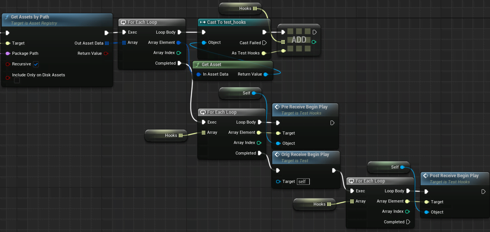
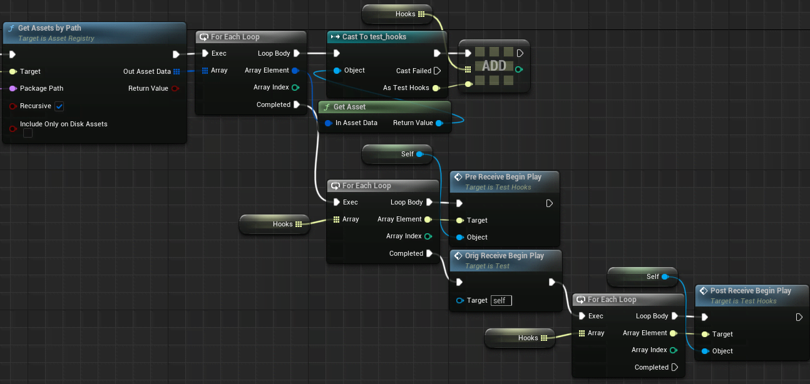

about
spaghetti is a function hooker for cooked unreal engine blueprints

spaghetti is a function hooker for cooked unreal engine blueprints
spaghetti is a function hooker for cooked unreal engine blueprints
the idea for spaghetti was born when i modded my first unity game and realised how powerful a hooking system like Monomod HookGen is
on the same day i discovered kismet-analyzer which has a merge-functions command which merges function kismet bytecode.
since i had decent experience dealing with assets having made stove, i thought i could make something like hookgen where you can hook a function in blueprint
transplanting hooks using modified code from stove works! then the funcmap just needs to be redirected to the hook and the original function's name changed to orig_name
the limitations of this approach are the same as normal asset patching - only one modded asset can be loaded at a time